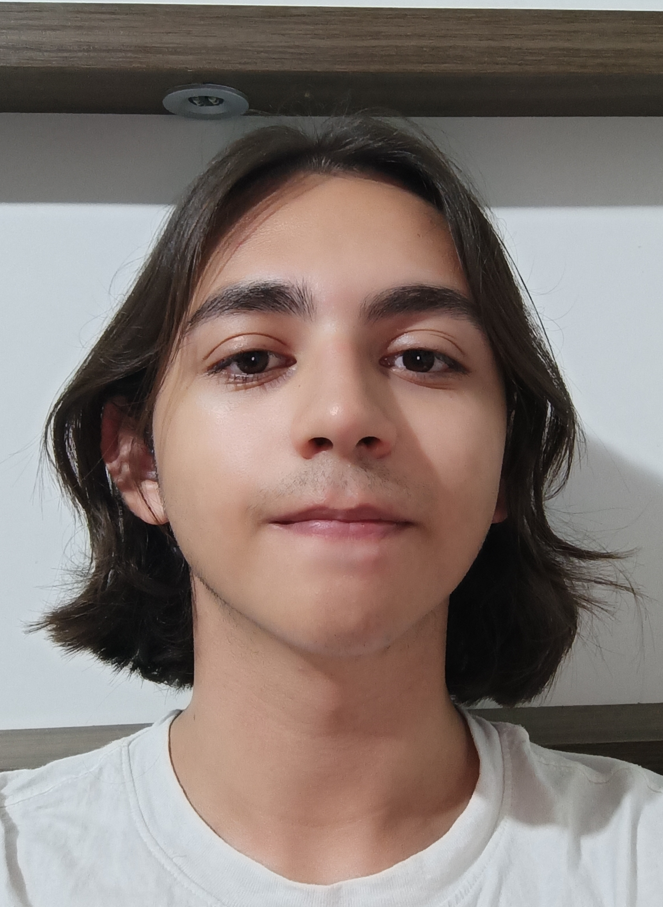
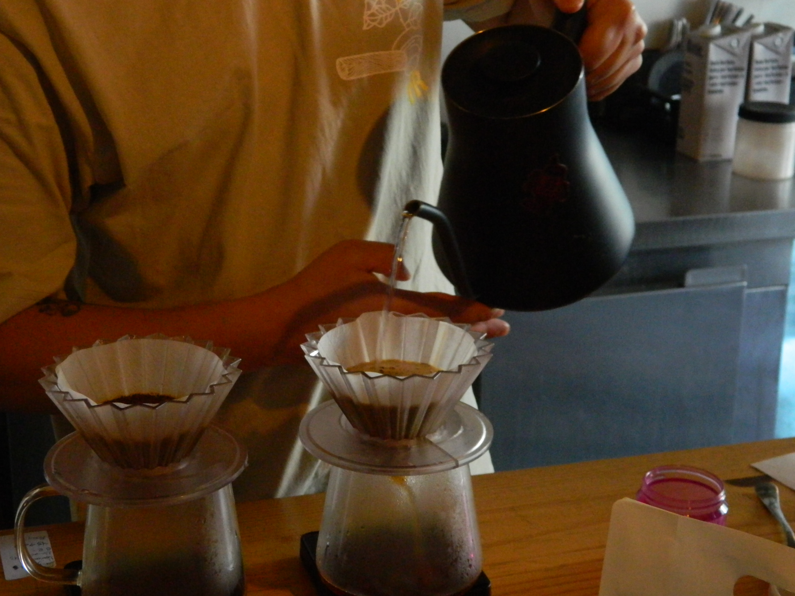
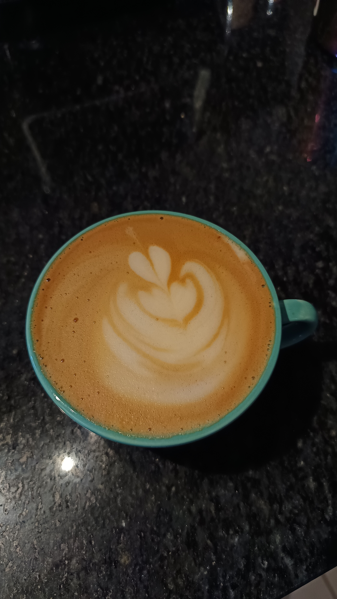

Estudante de Engenharia de Software & Entusiasta de Café

Sou apaixonado por café e filosofia. Já atuei profissionalmente como barista e atualmente curso engenharia de software com o objetivo de me profissionalizar na área.
Cresci em Guarapuava, Paraná. Toco bateria nas horas vagas e estou empolgado para trabalhar com você! A combinação da precisão técnica da engenharia com a arte da extração de um café perfeito define quem eu sou.
Realização eficiente de tarefas complexas.
Gestão otimizada da área de trabalho.
Assertividade e clareza no diálogo.
Flexibilidade em novos ambientes.

Estudo de técnicas avançadas em extração de cafés de especialidade em diversos métodos (V60, Chemex, Aeropress).

Utilização correta de máquinas e vaporização de leite para criação de artes complexas diretamente na xícara.
Participação em campeonatos e eventos da área de barismo.